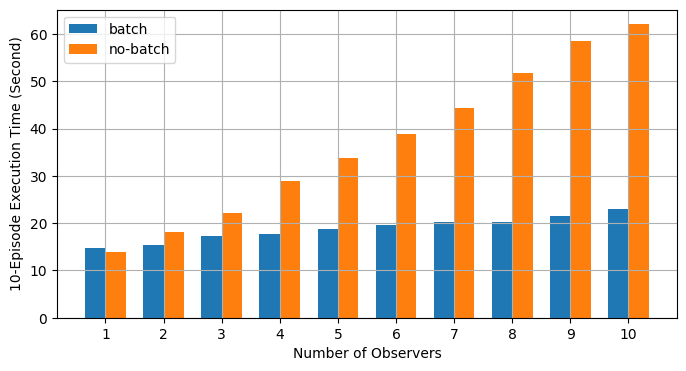

使用异步执行实现批处理 RPC 处理 ¶
创建时间：2025年4月1日 | 最后更新时间：2025年4月1日 | 最后验证：未验证
作者 : 沈丽
备注
在 github 中查看和编辑此教程。
{kind=link}
前提条件：
本教程演示了如何使用 @rpc.functions.async_execution 构建批量处理 RPC 应用程序。
装饰器，有助于通过减少阻塞数量来加速训练
RPC 线程和在被调用者上合并 CUDA 操作。这共享了
与使用 TorchServe 进行批量推理相同的理念。
备注
本教程需要 PyTorch v1.6.0 或更高版本。
基础知识 ¶
之前的教程已经展示了使用 torch.distributed.rpc 构建分布式训练应用的步骤，但它们没有详细说明在处理 RPC 请求时调用方会发生什么。从 PyTorch v1.5 开始，每个 RPC 请求都会阻塞调用方的一个线程来执行该请求中的函数，直到该函数返回。这对于许多用例来说都是可行的，但有一个缺点。如果用户函数在 IO 上阻塞，例如，在嵌套 RPC 调用或信号量，例如等待另一个 RPC 请求解除阻塞时，调用方的 RPC 线程将不得不空闲等待，直到 IO 完成或信号事件发生。因此，RPC 调用方可能会使用比必要的更多线程。这个问题产生的原因是 RPC 将用户函数视为黑盒，并且对函数内部发生的事情知之甚少。为了允许用户函数让出并释放 RPC 线程，需要向 RPC 系统提供更多的提示。
从 v1.6.0 版本开始，PyTorch 通过引入两个新概念来解决此问题：
一种封装异步执行的 torch.futures.Future 类型，同时支持安装回调函数。
一个 @rpc.functions.async_execution 装饰器，允许应用程序通知调用方目标函数 将返回一个 future，并在执行过程中可以暂停和多次 yield。
使用这两个工具，应用程序代码可以将用户函数拆分为多个更小的函数，将它们作为回调链在 Future 对象上串联起来
对象中，并返回包含最终结果的 Future 对象。在调用方一侧，当获取到 Future 对象时，它会安装后续的 RPC 响应
准备和通信作为回调，这将触发
当最终结果准备好时。这样，调用方就不再需要阻塞
一个线程并等待直到最终返回值就绪。请参阅
API 文档的
@rpc.functions.async_execution
简单示例。
除了减少被调用方的空闲线程数量外，这些工具还有助于
为了使批量 RPC 处理更容易和更快。以下两节内容：
本教程演示了如何构建分布式批量更新参数
服务器和批处理强化学习应用程序使用
@rpc.functions.async_execution
装饰器。
批量更新参数服务器 ¶
考虑一个具有一个参数服务器（PS）和多个训练器的同步参数服务器训练应用。在这个应用中，PS 持有参数并等待所有训练器报告梯度。在每次迭代中，它等待接收所有训练器的梯度，然后一次性更新所有参数。下面的代码展示了 PS 类的实现。下面的 update_and_fetch_model 方法使用了装饰器
@rpc.functions.async_execution 将由训练师调用。每次调用都会返回一个 Future 对象，该对象将被填充为更新的
模型。大多数训练师启动的调用只是将梯度累积到 .grad 字段，立即返回，并释放 RPC 线程到 PS。最后到达的训练师将触发优化器步骤并消耗所有之前报告的梯度。然后它将 future_model 设置为更新后的模型，
这反过来又通过 通知所有其他训练师之前的请求。然后它将 future_model 设置为更新后的模型，
并将 通知所有其他训练师之前的请求。
将下一行文本作为纯文本输入，并将其翻译为简体中文：
输入文本:
Future object and sends out the updated model to all trainers.
翻译结果：
未来对象并发送给所有训练师。
import threading
import torchvision
import torch
import torch.distributed.rpc as rpc
from torch import optim
num_classes, batch_update_size = 30, 5
class BatchUpdateParameterServer(object):
def __init__(self, batch_update_size=batch_update_size):
self.model = torchvision.models.resnet50(num_classes=num_classes)
self.lock = threading.Lock()
self.future_model = torch.futures.Future()
self.batch_update_size = batch_update_size
self.curr_update_size = 0
self.optimizer = optim.SGD(self.model.parameters(), lr=0.001, momentum=0.9)
for p in self.model.parameters():
p.grad = torch.zeros_like(p)
def get_model(self):
return self.model
@staticmethod
@rpc.functions.async_execution
def update_and_fetch_model(ps_rref, grads):
# Using the RRef to retrieve the local PS instance
self = ps_rref.local_value()
with self.lock:
self.curr_update_size += 1
# accumulate gradients into .grad field
for p, g in zip(self.model.parameters(), grads):
p.grad += g
# Save the current future_model and return it to make sure the
# returned Future object holds the correct model even if another
# thread modifies future_model before this thread returns.
fut = self.future_model
if self.curr_update_size >= self.batch_update_size:
# update the model
for p in self.model.parameters():
p.grad /= self.batch_update_size
self.curr_update_size = 0
self.optimizer.step()
self.optimizer.zero_grad()
# by settiing the result on the Future object, all previous
# requests expecting this updated model will be notified and
# the their responses will be sent accordingly.
fut.set_result(self.model)
self.future_model = torch.futures.Future()
return fut
对于训练器，它们都使用相同的集合初始化
参数来自 PS。在每次迭代中，每个训练器首先运行正向
然后，反向传播以在本地生成梯度。然后，每个训练器
向 PS 报告其梯度使用 RPC，并检索回更新的
通过相同 RPC 请求的返回值传递参数。在训练器中
实现，无论目标函数是否标记为
@rpc.functions.async_execution 无论是与否都没有区别。训练器只是简单地使用 rpc_sync 调用 update_and_fetch_model，这将阻塞训练器，直到返回更新后的模型。
batch_size, image_w, image_h = 20, 64, 64
class Trainer(object):
def __init__(self, ps_rref):
self.ps_rref, self.loss_fn = ps_rref, torch.nn.MSELoss()
self.one_hot_indices = torch.LongTensor(batch_size) \
.random_(0, num_classes) \
.view(batch_size, 1)
def get_next_batch(self):
for _ in range(6):
inputs = torch.randn(batch_size, 3, image_w, image_h)
labels = torch.zeros(batch_size, num_classes) \
.scatter_(1, self.one_hot_indices, 1)
yield inputs.cuda(), labels.cuda()
def train(self):
name = rpc.get_worker_info().name
# get initial model parameters
m = self.ps_rref.rpc_sync().get_model().cuda()
# start training
for inputs, labels in self.get_next_batch():
self.loss_fn(m(inputs), labels).backward()
m = rpc.rpc_sync(
self.ps_rref.owner(),
BatchUpdateParameterServer.update_and_fetch_model,
args=(self.ps_rref, [p.grad for p in m.cpu().parameters()]),
).cuda()
我们在本教程中跳过了启动多个进程的代码，请参阅示例
完整实现的代码库。注意，可以在不使用 @rpc.functions.async_execution 的情况下实现批量处理。
处理。
@rpc.functions.async_execution
装饰器。然而，这需要阻止更多的 RPC 线程，或者使用另一轮 RPC 来获取更新的模型，后者会增加更多的代码复杂性和通信开销。
PS 或使用另一轮 RPC 来获取更新的模型，后者会增加更多的代码复杂性和通信开销。
本节使用一个简单的参数服务器训练示例来展示如何。
这一部分使用一个简单的参数服务器训练示例来展示如何。
使用批处理 RPC 应用程序实现
@rpc.functions.async_execution
装饰器。在下一节中，我们重新实现之前的强化学习
示例
分布式 RPC 框架入门指南
使用批量处理教程，并展示其对训练的影响
速度。
批量处理 CartPole 求解器 ¶
本节使用 OpenAI Gym 中的 CartPole-v1 作为
一个示例，以展示批处理 RPC 的性能影响。请注意
该目标是为了演示使用
@rpc.functions 异步执行
而不是构建最佳的 CartPole 求解器或解决大多数不同的强化学习问题
问题，我们使用非常简单的策略和奖励计算策略
关注多观察者单代理批量 RPC 实现。我们使用
与下面的前一个教程中类似的策略模型。与前一个教程相比，其区别在于其构造函数接受一个额外的 batch 参数，该参数控制 dim 参数。
F.softmax 因为批处理，x 参数在 forward 函数中包含来自多个观察者的状态，因此维度需要正确更改。其他一切保持不变。
函数包含来自多个观察者的状态，因此维度需要相应更改。
需要正确更改。其他一切保持不变。
import argparse
import torch.nn as nn
import torch.nn.functional as F
parser = argparse.ArgumentParser(description='PyTorch RPC Batch RL example')
parser.add_argument('--gamma', type=float, default=1.0, metavar='G',
help='discount factor (default: 1.0)')
parser.add_argument('--seed', type=int, default=543, metavar='N',
help='random seed (default: 543)')
parser.add_argument('--num-episode', type=int, default=10, metavar='E',
help='number of episodes (default: 10)')
args = parser.parse_args()
torch.manual_seed(args.seed)
class Policy(nn.Module):
def __init__(self, batch=True):
super(Policy, self).__init__()
self.affine1 = nn.Linear(4, 128)
self.dropout = nn.Dropout(p=0.6)
self.affine2 = nn.Linear(128, 2)
self.dim = 2 if batch else 1
def forward(self, x):
x = self.affine1(x)
x = self.dropout(x)
x = F.relu(x)
action_scores = self.affine2(x)
return F.softmax(action_scores, dim=self.dim)
Observer 的构造函数也相应调整。它还接受一个
批量参数，它决定了使用哪个 Agent 函数来选择动作。在批量模式下，它会在 Agent 上调用 select_action_batch 函数
将在稍后介绍，并且此函数将被装饰为
@rpc.functions.async_execution.
import gym
import torch.distributed.rpc as rpc
class Observer:
def __init__(self, batch=True):
self.id = rpc.get_worker_info().id - 1
self.env = gym.make('CartPole-v1')
self.env.seed(args.seed)
self.select_action = Agent.select_action_batch if batch else Agent.select_action
与之前的教程相比
《开始使用分布式 RPC 框架》，观察者的行为略有不同。当环境停止时，它不会退出，而是在每个回合中始终运行 n_steps 次迭代。当环境返回时，观察者简单地重置环境并重新开始。在这种设计下，代理将从每个观察者那里接收固定数量的状态，因此可以将它们打包成一个固定大小的张量。在每一步中，Observer 使用 RPC 将其状态发送到 Agent，并通过返回值获取动作。在每个回合结束时，它将所有步骤的奖励返回给 Agent。请注意，这个 run_episode 函数将由 Agent 使用 RPC 调用。因此，这个函数中的 rpc_sync 调用将是一个嵌套的 RPC 调用。我们可以将这个函数标记为 @rpc.functions.async_execution
为了避免阻塞一个线程在 观察者 上。然而，瓶颈在于 代理 而不是 观察者 ，因此阻塞 观察者 进程的一个线程应该是可以的。
import torch
class Observer:
...
def run_episode(self, agent_rref, n_steps):
state, ep_reward = self.env.reset(), NUM_STEPS
rewards = torch.zeros(n_steps)
start_step = 0
for step in range(n_steps):
state = torch.from_numpy(state).float().unsqueeze(0)
# send the state to the agent to get an action
action = rpc.rpc_sync(
agent_rref.owner(),
self.select_action,
args=(agent_rref, self.id, state)
)
# apply the action to the environment, and get the reward
state, reward, done, _ = self.env.step(action)
rewards[step] = reward
if done or step + 1 >= n_steps:
curr_rewards = rewards[start_step:(step + 1)]
R = 0
for i in range(curr_rewards.numel() -1, -1, -1):
R = curr_rewards[i] + args.gamma * R
curr_rewards[i] = R
state = self.env.reset()
if start_step == 0:
ep_reward = min(ep_reward, step - start_step + 1)
start_step = step + 1
return [rewards, ep_reward]
代理 的构造函数也接受一个 批处理 参数，该参数控制动作概率的批处理方式。在批处理模式下，saved_log_probs 包含一个张量列表，其中每个张量包含一个步骤中所有观察者的动作概率。在不进行批处理的情况下，saved_log_probs 是一个字典，其键是观察者 ID，值是该观察者的动作概率列表。
import threading
from torch.distributed.rpc import RRef
class Agent:
def __init__(self, world_size, batch=True):
self.ob_rrefs = []
self.agent_rref = RRef(self)
self.rewards = {}
self.policy = Policy(batch).cuda()
self.optimizer = optim.Adam(self.policy.parameters(), lr=1e-2)
self.running_reward = 0
for ob_rank in range(1, world_size):
ob_info = rpc.get_worker_info(OBSERVER_NAME.format(ob_rank))
self.ob_rrefs.append(rpc.remote(ob_info, Observer, args=(batch,)))
self.rewards[ob_info.id] = []
self.states = torch.zeros(len(self.ob_rrefs), 1, 4)
self.batch = batch
self.saved_log_probs = [] if batch else {k:[] for k in range(len(self.ob_rrefs))}
self.future_actions = torch.futures.Future()
self.lock = threading.Lock()
self.pending_states = len(self.ob_rrefs)
非批处理的 select_action 简单地将状态传递给策略，保存动作概率，并立即将动作返回给观察者。
from torch.distributions import Categorical
class Agent:
...
@staticmethod
def select_action(agent_rref, ob_id, state):
self = agent_rref.local_value()
probs = self.policy(state.cuda())
m = Categorical(probs)
action = m.sample()
self.saved_log_probs[ob_id].append(m.log_prob(action))
return action.item()
使用批处理，状态存储在一个 2D 张量 self.states 中，使用观察者 ID 作为行 ID。然后，通过安装回调函数到批生成的 self.future_actionsFuture 对象，链式添加一个 Future，该对象将使用该观察者的 ID 索引特定的行。最后到达的观察者将所有批处理状态一次性通过策略，并相应地设置 self.future_actions。当发生这种情况时，所有安装到 self.future_actions 上的回调函数将被触发，它们的返回值将用于填充链式添加的 Future 对象，进而通知 Agent 准备并传达对其他观察者之前所有 RPC 请求的响应。
class Agent:
...
@staticmethod
@rpc.functions.async_execution
def select_action_batch(agent_rref, ob_id, state):
self = agent_rref.local_value()
self.states[ob_id].copy_(state)
future_action = self.future_actions.then(
lambda future_actions: future_actions.wait()[ob_id].item()
)
with self.lock:
self.pending_states -= 1
if self.pending_states == 0:
self.pending_states = len(self.ob_rrefs)
probs = self.policy(self.states.cuda())
m = Categorical(probs)
actions = m.sample()
self.saved_log_probs.append(m.log_prob(actions).t()[0])
future_actions = self.future_actions
self.future_actions = torch.futures.Future()
future_actions.set_result(actions.cpu())
return future_action
现在我们来定义如何将不同的 RPC 函数拼接在一起。 Agent
控制每个剧集的执行。它首先使用 rpc_async 来启动
在所有观察者上启动剧集，并阻塞在返回的 futures 上，这些 futures 将被
填充观察者奖励。注意，下面的代码使用了 RRef 辅助工具
ob_rref.rpc_async() 来在 run_episode 函数的 ob_rref RRef 拥有者上启动，并提供相应的参数。然后，它将保存的动作概率和返回的观察者奖励转换为预期的数据格式，并启动训练步骤。最后，它重置所有状态并返回当前剧集的奖励。此函数是运行一个剧集的入口点。
class Agent:
...
def run_episode(self, n_steps=0):
futs = []
for ob_rref in self.ob_rrefs:
# make async RPC to kick off an episode on all observers
futs.append(ob_rref.rpc_async().run_episode(self.agent_rref, n_steps))
# wait until all obervers have finished this episode
rets = torch.futures.wait_all(futs)
rewards = torch.stack([ret[0] for ret in rets]).cuda().t()
ep_rewards = sum([ret[1] for ret in rets]) / len(rets)
# stack saved probs into one tensor
if self.batch:
probs = torch.stack(self.saved_log_probs)
else:
probs = [torch.stack(self.saved_log_probs[i]) for i in range(len(rets))]
probs = torch.stack(probs)
policy_loss = -probs * rewards / len(rets)
policy_loss.sum().backward()
self.optimizer.step()
self.optimizer.zero_grad()
# reset variables
self.saved_log_probs = [] if self.batch else {k:[] for k in range(len(self.ob_rrefs))}
self.states = torch.zeros(len(self.ob_rrefs), 1, 4)
# calculate running rewards
self.running_reward = 0.5 * ep_rewards + 0.5 * self.running_reward
return ep_rewards, self.running_reward
代码的其余部分是正常的启动和日志记录过程
与其他 RPC 教程类似。在本教程中，所有观察者都被动地等待代理的命令。请参阅
示例
示例
全部实现的仓库。
def run_worker(rank, world_size, n_episode, batch, print_log=True):
os.environ['MASTER_ADDR'] = 'localhost'
os.environ['MASTER_PORT'] = '29500'
if rank == 0:
# rank0 is the agent
rpc.init_rpc(AGENT_NAME, rank=rank, world_size=world_size)
agent = Agent(world_size, batch)
for i_episode in range(n_episode):
last_reward, running_reward = agent.run_episode(n_steps=NUM_STEPS)
if print_log:
print('Episode {}\tLast reward: {:.2f}\tAverage reward: {:.2f}'.format(
i_episode, last_reward, running_reward))
else:
# other ranks are the observer
rpc.init_rpc(OBSERVER_NAME.format(rank), rank=rank, world_size=world_size)
# observers passively waiting for instructions from agents
rpc.shutdown()
def main():
for world_size in range(2, 12):
delays = []
for batch in [True, False]:
tik = time.time()
mp.spawn(
run_worker,
args=(world_size, args.num_episode, batch),
nprocs=world_size,
join=True
)
tok = time.time()
delays.append(tok - tik)
print(f"{world_size}, {delays[0]}, {delays[1]}")
if __name__ == '__main__':
main()
批量 RPC 有助于将动作推理合并为更少的 CUDA 操作，从而减少了摊销开销。上面的 主 函数使用不同的观察者数量（从 1 到 10）在批量和无批量模式下运行相同的代码。下面的图显示了使用默认参数值的不同世界大小的执行时间。结果证实了我们的预期，即批量处理有助于加速训练。
